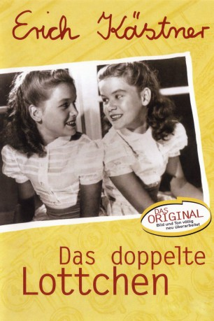

#3926 Das Doppelte Lottchen
 
 IMDB-Wertung: 7.1 / 10
IMDB-Wertung: 7.1 / 10  Metascore: 0
Metascore: 0 
Zwei zehnjährige Mädchen, die freche Luise Palfy aus Wien und die höfliche, bescheidene Lotte Körner aus München, treffen in einem Ferienheim für Mädchen in Seebühl am Bühlsee aufeinander. Sie können sich anfangs überhaupt nicht ausstehen, weil sie sich so ähnlich sehen. Nach einigen Nachforschungen stellt sich dann heraus, dass die beiden Zwillinge sind und durch die Scheidung ihrer Eltern auseinander gerissen wurden. Luises Vater ist Komponist in Wien, und Lottes Mutter, die wieder ihren alten Familiennamen angenommen hat, arbeitet in München. Am Ende der Ferien vertauschen die Zwillinge ihre Rollen, was wegen der unterschiedlichen Fähigkeiten und Charaktereigenschaften zu einiger Verwirrung bei ihren nichtsahnenden Eltern führt.
Jahr: 1950
Dauer: 103 Minuten
FSK: 6
Land: West-Deutschland Studio: ITonspuren:
Untertitel:
Auflösung: 1080p (1488x1080) Größe: 6287 MB
Genre: Komödie, Familie
Regisseur: Josef von Báky
Drehbuch: Piotr Kochalski
Soundtrack:
Darsteller:
- Erich Kästner als Erzähler
- Antje Weisgerber als Luiselotte Körner
- Peter Mosbacher als Ludwig Palfy, Opernkapellmeister
- Jutta Günther als Lotte Körner
- Isa Günther als Luise Palfy
- Senta Wengraf als Irene Gerlach
- Hans Olden als Hofrat Strobl
- Auguste Pünkösdy als Resi
- Maria Krahn als Frau Muthesius
- Gustav Waldau als
- Liesl Karlstadt als Frau Wagenthaler
- Inge Rosenberg als Fräulein Ulrike
- Gaby Philipp als Fräulein Gerda
- Walter Ladengast als Herr Gabele
- Gertrud Wolle als Fräulein Linnekogel
- Hertha von Hagen als
- Liselotte Berker als
- Rudolf Rhomberg als Photograph
- Gerda Sommerschuh als
- Ina Gerhein als
- Katja Sabo als
- Paul Kuen als
- Friedrich Bender als
- Carolin Reiber als Schülerin , uncredited
Datei: X:\1950-1959\Doppelte Lottchen, Das (1950, FSK6, 1488x1080).mkv seit 30.06.2016
Festplatte: HD 1900-1970
 Es gibt insgesamt 141 Filme in der Gruppe '1950-1959'
Es gibt insgesamt 141 Filme in der Gruppe '1950-1959'